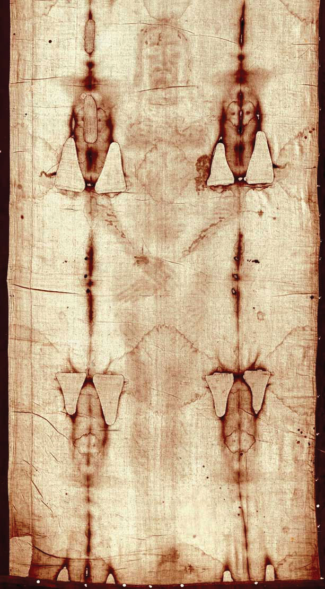
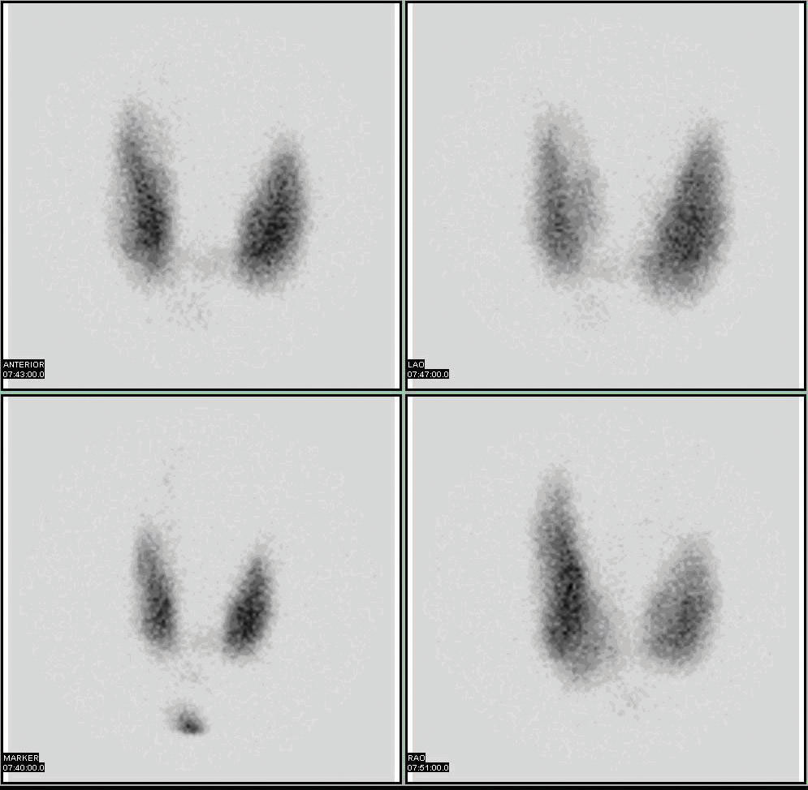

Radioactive isotopes have a variety of applications. Generally, however, they are useful either because we can detect their radioactivity or we can use the energy they release.
Radioactive isotopes are effective tracers because their radioactivity is easy to detect. A tracerA substance that can be used to follow the pathway of that substance through some structure. is a substance that can be used to follow the pathway of that substance through some structure. For instance, leaks in underground water pipes can be discovered by running some tritium-containing water through the pipes and then using a Geiger counter to locate any radioactive tritium subsequently present in the ground around the pipes. (Recall that tritium, 3H, is a radioactive isotope of hydrogen.)
Tracers can also be used to follow the steps of a complex chemical reaction. After incorporating radioactive atoms into reactant molecules, scientists can track where the atoms go by following their radioactivity. One excellent example of this is the use of radioactive carbon-14 to determine the steps involved in the photosynthesis in plants. We know these steps because researchers followed the progress of the radioactive carbon-14 throughout the process.
Radioactive isotopes are useful for establishing the ages of various objects. The half-life of radioactive isotopes is unaffected by any environmental factors, so the isotope acts like an internal clock. For example, if a rock is analyzed and is found to contain a certain amount of uranium-235 and a certain amount of its daughter isotope, we can conclude that a certain fraction of the original uranium-235 has radioactively decayed. If half of the uranium has decayed, then the rock has an age of one half-life of uranium-235, or about 4.5 × 109 y. Many analyses like this, using a wide variety of isotopes, have indicated that the age of Earth itself is over 4 × 109 y. In another interesting example of radioactive dating, 3H dating has been used to verify the stated vintages of some old fine wines.
Carbon-14 (half-life is 5,370 y) is particularly useful in determining the age of once-living artifacts (e.g., animal or plant matter). A tiny amount of carbon-14 is produced naturally in the upper reaches of the atmosphere, and living things incorporate some of it into their tissues, building up to a constant, although very low, level. Once a living thing dies, however, it no longer acquires carbon-14, and as time passes, the carbon-14 that was in the tissues decays. If a once-living artifact is discovered and analyzed many years after its death, with the remaining carbon-14 compared to the known constant level, an approximate age of the artifact can be determined. Using such methods, scientists determined that the age of the Shroud of Turin (made of linen, which comes from the flax plant, and purported by some to be the burial cloth of Jesus Christ; Figure 11.3 "Shroud of Turin") is about 600–700 y, not 2,000 y as claimed by some. Scientists were also able to use radiocarbon dating to show that the age of a mummified body found in the ice of the Alps was 5,300 y.
Figure 11.3 Shroud of Turin
In 1989, several groups of scientists used carbon-14 dating to demonstrate that the age of the Shroud of Turin was only 600–700 y. Many people still cling to a different notion, despite the scientific evidence.
The radiation emitted by some radioactive substances can be used to kill microorganisms on a variety of foodstuffs, which extends the shelf life of these products. Produce such as tomatoes, mushrooms, sprouts, and berries are irradiated with the emissions from cobalt-60 or cesium-137. This exposure kills a lot of the bacteria that cause spoilage, so the produce stays fresh longer. Eggs and some meat, such as beef, pork, and poultry, can also be irradiated. Contrary to the belief of some people, irradiation of food does not make the food itself radioactive.
Radioactive isotopes have numerous medical applications—diagnosing and treating illnesses and diseases. One example of a diagnostic application is using radioactive iodine-131 to test for thyroid activity (Figure 11.4 "Medical Diagnostics"). The thyroid gland in the neck is one of the few places in the body with a significant concentration of iodine. To evaluate thyroid activity, a measured dose of iodine-131 is administered to a patient, and the next day a scanner is used to measure the amount of radioactivity in the thyroid gland. The amount of radioactive iodine that collects there is directly related to the activity of the thyroid, allowing trained physicians to diagnose both hyperthyroidism and hypothyroidism. Iodine-131 has a half-life of only 8 d, so the potential for damage due to exposure is minimal. Technetium-99 can also be used to test thyroid function. Bones, the heart, the brain, the liver, the lungs, and many other organs can be imaged in similar ways by using the appropriate radioactive isotope.
Figure 11.4 Medical Diagnostics
Radioactive iodine can be used to image the thyroid gland for diagnostic purposes.
Source: Scan courtesy of Myo Han, http://en.wikipedia.org/wiki/File:Thyroid_scan.jpg.
Very little radioactive material is needed in these diagnostic techniques because the radiation emitted is so easy to detect. However, therapeutic applications usually require much larger doses because their purpose is to preferentially kill diseased tissues. For example, if a thyroid tumor is detected, a much larger infusion (thousands of rem, as opposed to a diagnostic dose of less then 40 rem) of iodine-131 could help destroy the tumor cells. Similarly, radioactive strontium is used to not only detect but also ease the pain of bone cancers. Table 11.5 "Some Radioactive Isotopes That Have Medical Applications" lists several radioactive isotopes and their medical uses.
Table 11.5 Some Radioactive Isotopes That Have Medical Applications
| Isotope | Use |
|---|---|
| 32P | cancer detection and treatment, especially in eyes and skin |
| 59Fe | anemia diagnosis |
| 60Co | gamma ray irradiation of tumors |
| 99mTc | brain, thyroid, liver, bone marrow, lung, heart, and intestinal scanning; blood volume determination |
| 131I | diagnosis and treatment of thyroid function |
| 133Xe | lung imaging |
| 198Au | liver disease diagnosis |
In addition to the direct application of radioactive isotopes to diseased tissue, the gamma ray emissions of some isotopes can be directed toward the tissue to be destroyed. Cobalt-60 is a useful isotope for this kind of procedure.
One relatively rare form of radioactivity is called positron emission. It is similar to beta particle emission, except that instead of emitting an electron, a nucleus emits a positively charged electron, called a positron. A positron is actually a piece of antimatter; therefore, when a positron encounters an electron, both particles are converted into high-energy gamma radiation.
Isotopes that emit positrons can be employed in a medical imaging technique called positron emission tomography (PET). A patient receives a compound containing a positron-emitting isotope, either intravenously or by ingestion. The radioactive compound travels throughout the body, and the patient is then pushed slowly through a ring of sensors that detect the gamma radiation given off by the annihilation of positrons and electrons. A computer connected to the sensors constructs a three-dimensional image of the interior of part or all of the patient’s body, allowing doctors to see organs or tumors or regulate the function of various organs (such as the brain or the heart) to diagnose the medical condition of the patient.
Two isotopes that undergo positron emission are carbon-11 and fluorine-18, with half-lives of 20.4 and 110 min, respectively. Both isotopes can be incorporated into sugar molecules and introduced into the body. Doctors can use the intensity of gamma ray emission to find tissues that metabolize the sugar faster than other tissues; fast-metabolizing tissue is one sign of a malignant (i.e., cancerous) tumor. Researchers use similar techniques to map areas of the brain that are most active during specific tasks, such as reading or speaking.
PET is one of many diagnostic and treatment methods that physicians use to improve the quality of our lives. It is one of the many positive uses of radioactivity in society.
Describe some of the different ways that amounts of radioactivity are applied in society.
Radioactive isotopes are used in dating, as tracers, and in medicine as diagnostic and treatment tools.
Define tracer is and give an example of how tracers work.
Name two isotopes that have been used as tracers.
Explain how radioactive dating works.
Name an isotope that has been used in radioactive dating.
The current disintegration rate for carbon-14 is 14.0 Bq. A sample of burnt wood discovered in an archaeological excavation is found to have a carbon-14 decay rate of 3.5 Bq. If the half-life of carbon-14 is 5,700 y, approximately how old is the wood sample?
A small asteroid crashes to Earth. After chemical analysis, it is found to contain 1 g of technetium-99 to every 3 g of ruthenium-99, its daughter isotope. If the half-life of technetium-99 is 210,000 y, approximately how old is the asteroid?
What do you think are some of the positive aspects of irradiation of food?
What do you think are some of the negative aspects of irradiation of food?
Describe how iodine-131 is used to both diagnose and treat thyroid problems.
List at least five organs that can be imaged using radioactive isotopes.
Which radioactive emissions can be used therapeutically?
Which isotope is used in therapeutics primarily for its gamma ray emissions?
A tracer follows the path of a chemical or a physical process. One of the uses of a tracer is following the path of water underground (answers will vary).
Radioactive dating works by comparing the amounts of parent and daughter isotopes and calculating back to how long ago all of the material was just the parent isotope.
about 11,400 y
increased shelf life (answers will vary)
Iodine-131 is preferentially absorbed by the thyroid gland and can be used to measure the gland’s activity or destroy bad cells in the gland.
gamma rays, beta particles, or alpha particles